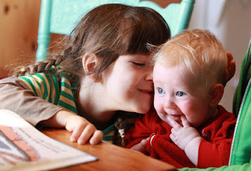

What Media Bias?
2011-05-31
 |
| That baby is totally a boy! |
{kind=link}
The gist of the article, for those who don't have time to read it, or just try not to give Canadians too much attention (it only encourages them!), is that a very forward-thinking couple in Toronto is raising Storm, the third of their three children, without informing anyone of the child's gender. OK, so the two midwives know. And the baby's two older brothers - Jazz, 5, and Kio, 2. And a few nosy strangers who have peeked when the baby's diaper was being changed in public. (There's no law against that in Canada? I mean the diaper-changing in plain sight, and the peeking.) But other than those few, and (presumably) the baby [it]self, no one knows. This has prompted a predictable parade of judgement from those who meet Storm, but not an ounce of it from the article's author. It hardly seems fair, then, for me to pass judgement. Instead, I'll just share a few of the more interesting paragraphs and let you be the judge:
Both [parents] come from liberal families. Stocker grew up listening to Free to Be … You and Me, a 1972 record with a central message of gender neutrality. Witterick remembers her brother mucking around with gender as a teen in the '80s, wearing lipstick and carrying handbags like David Bowie and Mick Jagger.
The family lives in a cream-coloured two-storey brick home in the city's Junction Triangle neighbourhood. Their front porch is crammed with bicycles, including Kio's pink and purple tricycle. Inside, it's organized clutter. The children's arts and crafts projects are stacked in the bookcases, maps hang on the walls and furniture is well-used and of a certain vintage.
Upstairs they co-sleep curled up on two mattresses pushed together on the floor of the master bedroom, under a heap of mismatched pillows and blankets. During the day, the kids build forts with the pillows and pretend to walk a tightrope between the mattresses.
On a recent Tuesday, the boys finish making paper animal puppets and a handmade sign to celebrate their dad's birthday. "I love to do laundry with dad," reads one message. They nuzzle Storm, splayed out on the floor. The baby squeals with delight.
Witterick practices unschooling, an offshoot of home-schooling centred on the belief that learning should be driven by a child's curiosity. There are no report cards, no textbooks and no tests. For unschoolers, learning is about exploring and asking questions, "not something that happens by rote from 9 a.m. to 3 p.m. weekdays in a building with a group of same-age people, planned, implemented and assessed by someone else," says Witterick. The fringe movement is growing. An unschooling conference in Toronto drew dozens of families last fall.
The kids have a lot of say in how their day unfolds. They decide if they want to squish through the mud, chase garter snakes in the park or bake cupcakes.I, too, grew up listening to "Free to Be...You and Me." I wore that record out, and I've had it on my iPod for as long as I've had an iPod. Huck and I frequently listen to it on the way to [not-un-]school. We love it. Sure, I've described the record as "borderline-propaganda" and I still can't believe I didn't turn out to be either a militant feminist out of ascension to its premises or a raging chauvinist out of rebellion. But I wouldn't exactly say the central message of the record is "gender neutrality." I'd say its theme is more like the old bumper sticker that's probably long since faded from the last 1970's Volvo in Ann Arbor: the radical notion that women are people too. I'm not judging the inherent educational value in cupcake baking, or the strong-arm implication that dads should do laundry; I'm simply clarifying that growing up on a certain musical diet doesn't necessarily mean you'll wind up raising 1/3 of your children androgynously.
Longtime friend Ayal Dinner, 35, a father two young boys, was surprised to hear the couple's announcement when Storm was born, but is supportive.
"I think it's amazing that they're willing to take on challenging people in this way," says Dinner. "While they are political and ideological about these things, they're also really thinking about what it means and struggling with it as they go along."
Dinner understands why people may find it extreme. "Although I can see the criticism of 'This is going to be hard on my kid,' it's great to say, 'I love my kid for whoever they are.'"
It gets confusing her because we have an adult named after a meal discussing a child named after a weather pattern. Nevertheless, Dinner seems to be arriving at a false conclusion. For better or worse, we still live in a world that sees gender. People see a new baby and want points of reference like age, gender, or birth order just to make small talk and express interest. Parents' refusal to supply some of this commonly-supplied information is almost certainly not the best way to say "I love my kid for whoever they are." If anything, such parents are saying "I love my unique way of seeing the world so much, and care about the almost-certain negative ramifications of what I'm doing to Storm so little, that I'm willing to screw my child's early years up magnificently in order to make the point." I would argue that the very best way to show your child that you love them for whoever they are is, um...to love them whoever they are.
I know this can be a volatile topic, though, so I'd love to hear any civil and coherent thoughts on the matter.
Labels: Parenting, TLDR